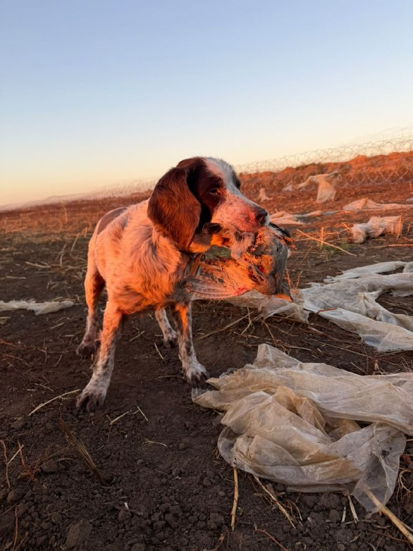

Сеппі - Російський мисливський спанієль.
Йому 15 років.
Він — чемпіон України.
Сеппі має помірно-спокійний і холоднокровний характер. Обожнює їсти, любить пригоди: полювання, рибалку та купання.
Раніше дуже любив гуляти, але зараз, у поважному віці, більше цінує відпочинок і їжу.